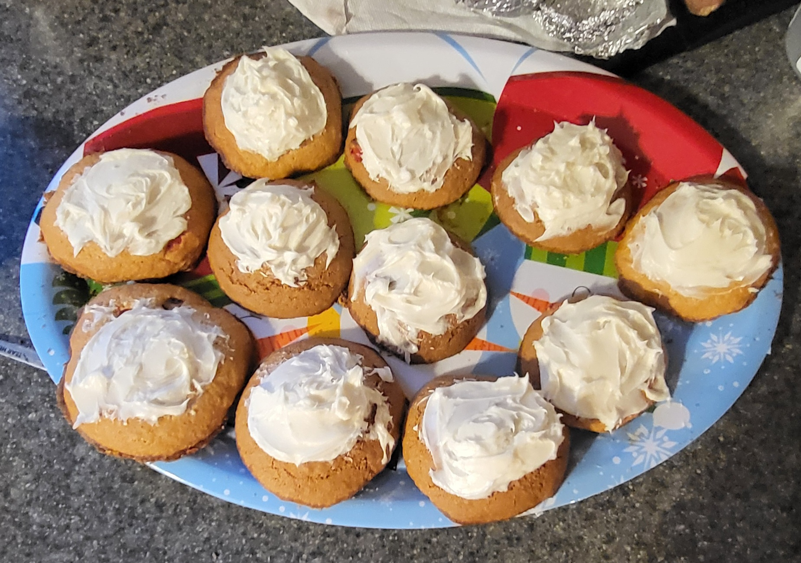

Chocolate Chip Icing Cookies
Ingrediants
- 1 cup unsalted butter
- 1 cup light brown sugar
- 3/4th cup granulated sugar
- 2 eggs
- 2 teaspoons vanilla extract
- 3 cups flour
- 1 teaspoon baking soda
- 1 teaspoon salt
- 1 cup of chocolate chips or M&M's
- Icing of your choice
Why I love It
Well, this recipe orginally started as me finding it on a random website. After deciding to try and make it I relized it was amazing. It has changed quite a lot in the last three years. It orginally started as Chocolate M&M Cookies, which were great. Now I've added icing and this year I tried caramel M&M's

Steps
- Preheat the oven to 375°F, use baking sheets
- In a large bowl, mix butter and sugars together for 1 minute. Then add the eggs and vanilla and mix until combined
- Add the flour, baking soda, and salt, mix until combined. Next, dump in chocolate chips or M&M's. For bettter results, refigerate dough for atleast 15 minutes
- Using an ice cream scope or large spoon, scoop the dough into tiny spheres, place on baking sheet about 1-2 inches apart
- Place in oven and bake for 7-10 minutes, check regularly until edges are golden brown then remove sheet from oven
- Once cooled, spread icing on top of cookies, Enjoy!